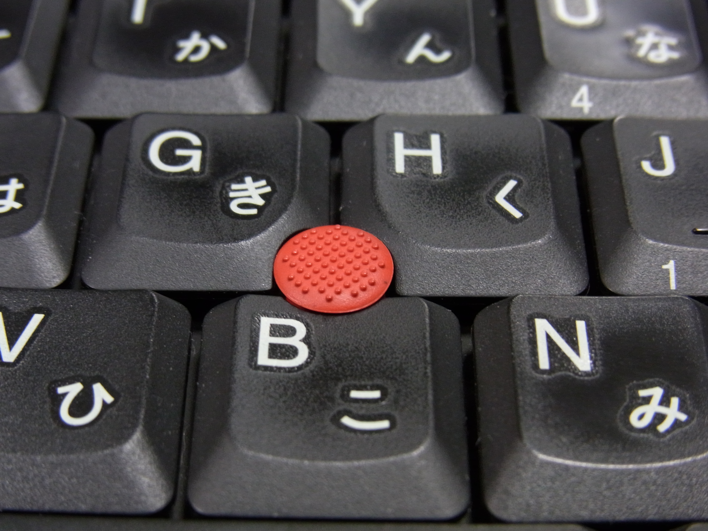
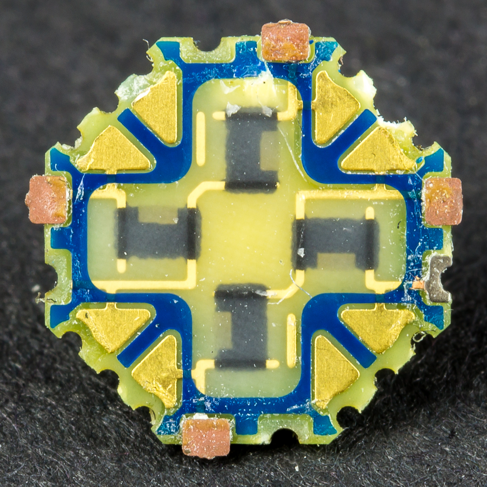
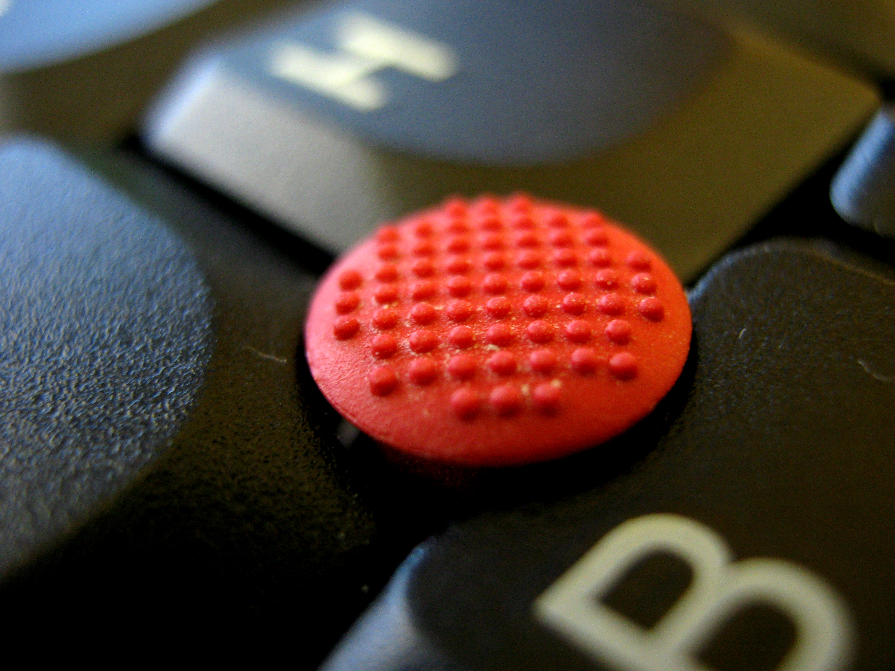

IBM TrackPoint (1992)
The laptop pointer that reads pressure, not motion — force-sensing isometric input between the G and H keys

Overview
The pointing stick — IBM's leading brand is TrackPoint — is a small analog stick mounted centrally in a computer keyboard that controls the cursor by sensing applied force rather than physical displacement. It reads the cap through two pairs of resistive strain gauges: push toward the direction you want and the gauges measure strain, while the operating system derives pointer velocity from how hard you press. Because it responds to force and not to motion it is classed as an isometric pointing device, and because it sits between the G, H and B keys it keeps the hands planted on the home row — no reaching for a mouse.
IBM introduced it commercially in 1992 on the ThinkPad 700 series under the name TrackPoint. Development traces back to Ted Selker, a researcher at Xerox PARC, whose 1984 work was motivated by a timing study: a typist spends roughly 0.75 seconds moving a hand from keyboard to mouse and back. Selker later refined the idea at IBM into the shipped product, which IBM patented in the 1990s and which Lenovo still builds into ThinkPads as the red "nub."
The strangest flank of the same idea came from Zenith Data Systems, whose early-1990s laptops shipped the "J-Mouse" — a special keyswitch under the J key let the letter-J keycap itself act as the pointing stick, with mouse buttons below the space bar. The home-row force-sensing instinct rendered in its most literal form: the very key you were typing on becomes the pointer.
Deep dive
Mice, trackballs, and joysticks translate how far something moves. The pointing stick translates how hard you press an essentially immobile cap. Pointer velocity tracks applied strain, so firmer pressure means faster movement — and the device offers continuous motion with no finger run-off and no repositioning, because there is nothing to run off the edge of. It is the isometric principle, and one of the few input paradigms that rewards keeping your hands entirely still.
The measured cost of a hand diverting to the mouse is roughly 0.75 seconds per round trip (Xerox PARC, 1984). A pointer embedded among G, H and B removes that diversion entirely; a fingertip flexes while the hands stay on home row. This logic made the pointing stick the natural pointer for compact laptops with no room for a trackpad, and the reason it endured for decades.
Zenith's Z-Star-line laptops turned the most-used letter key into the device: the J keycap rides on a special keyswitch and behaves as an isometric stick. It is the same home-row force-sensing instinct as TrackPoint, but where IBM built the nub as a separate component, Zenith collapsed the pointing device into a letter you were already reaching for. Both are the 1990s' crack at "how do I point without leaving the keyboard?"
Team & pioneers
- Ted Selker developed the pointing-stick concept at Xerox PARC (1984) and refined it into the commercial TrackPoint at IBM.
- IBM commercialized TrackPoint in 1992 on the ThinkPad 700; patented improved versions in the 1990s (e.g., US 5,489,900 force-sensitive transducer).
- Zenith Data Systems shipped the J-Mouse, where the J keycap doubled as an isometric pointing stick.
Media

